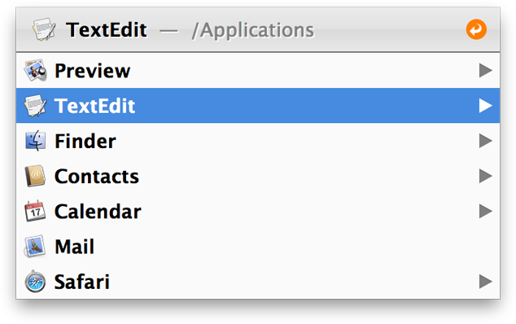

Application Switching
LaunchBar’s built-in application switcher allows you to quickly switch between currently running applications.

LaunchBar’s application switcher
To open the application switcher, do one of the following:
- Press Command-Space to open LaunchBar, keep the Command key held down and press the space bar repeatedly until the desired item is selected. Now release the Command key to switch to the selected application immediately.
- Press Command-Space to open LaunchBar, then press Command-R to get the list of running applications. Choose the desired application from the list and press Return.
- Select the Running Applications action by typing an abbreviation and press Return.
If you have configured a
LaunchBar activation shortcut other than Command-Space, LaunchBar’s application switcher will use that shortcut accordingly. E.g. if you are using Control-Escape, hold down the Control key and press the Escape key repeatedly to browse the list of running applications.
Auto Activation
If you access the application switcher via Command-Space-Space, releasing the Command key activates the selected application instantly. This mode is indicated with an orange auto activation icon at the right edge of the bar:
To prevent auto activation, tap any modifier key (e.g. the Option key) before releasing the Command key. To open the application switcher without any auto activation in the first place, open it with Command-R.
Navigating the list
Using the keyboard
- Use the up/down arrow keys to navigate the list.
- Press Command-R to select the next application.
- When browsing the list with Command-Space-Space, press Command-Shift-Space to select the previous application.
- When auto activation is off, the list of applications can be sub-searched to select the desired application by name.
Using a scroll wheel mouse
If you are using a scroll wheel mouse, application switching can be performed even more efficiently. Hit Command-Space-Space, scroll the wheel and release the Command key as soon as the desired application is selected.
Switching between the two most recent applications
The list of running applications is sorted by activation time, the most recently used applications will therefore always be at the top of the list. This allows you to quickly switch between the two most recently used applications simply by hitting Command-Space-Space.
Quitting and hiding applications
While the application switcher is opened, you can do one of the following:
- Press Command-Q to quit the currently selected application.
- Press Command-H to hide the currently selected application.
- Press Command-Option-F to Force Quit the currently selected application.
Alternatively, once you’ve selected an application, press Tab and type an abbreviation to choose one of the actions “Quit Application”, “Hide Application” or “Force Quit Application”.